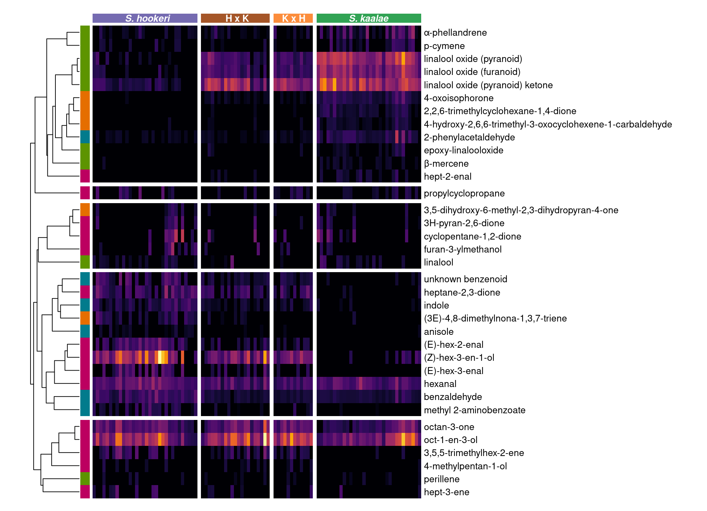
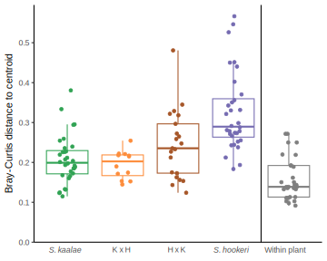

Floral scent of Schiedea kaalae x hookeri hybrids
John Powers
<<<<<<< HEAD2024-12-04
=======2025-04-23
>>>>>>> 27b13227da49979dfa7b2b0cafc285e7cc4f0a95figs <- list.files("./hybrids_cut_plots", pattern=".svg")
<<<<<<< HEAD
walk(figs, ~system(paste0("inkscape --export-dpi 150 -o ./hybrids_cut_plots/png/", str_replace(.x, ".svg",".png"), " ./hybrids_cut_plots/", .x)))greenhouse <- matrix(c(-117.8475746, 33.6472914), nrow=1) #latlong of UCI greenhouse
s <- read_tsv("data/UCI_GCMS/Schiedea Volatiles Sampling - Samples.tsv") %>%
drop_na(Start, Stop) %>% #2 bad samples with no Start, 1 missing Stop in 2019
nest(.by=SampleDate) %>% #sunset function is slow, run on unique dates
mutate(sunset = map_vec(SampleDate,
~maptools::sunriset(dateTime=ymd_hms(paste(.x, "13:00:00")),
direction="sunset", crds=greenhouse, POSIXct.out=T)$time),
solarnoon = map_vec(SampleDate,
~maptools::solarnoon(dateTime=ymd_hms(paste(.x, "13:00:00")),
crds=greenhouse, POSIXct.out=T)$time)) %>% unnest(data) %>%
mutate(StartSunset = difftime(ymd_hms(paste(SampleDate, Start)), sunset, units="hours"),
StopSunset = difftime(ymd_hms(paste(SampleDate, Stop)), sunset, units="hours"),
StartNoon = difftime(ymd_hms(paste(SampleDate, Start)), solarnoon, units="hours"))
CASsubs <- read_tsv("data/UCI_GCMS/CASsubs3.csv") %>% select(CAS, newCAS) %>% deframe()
data <- read_tsv("data/UCI_GCMS/svhyb_ambient_blanks.csv") %>%
distinct() %>% #generated some reports twice
select(FileName:`Base Peak`, Weighted, Reverse) %>%
rename(Path = FileName, Fraction = Amount, Match = Weighted) %>%
mutate(Path = str_sub(Path, 52, -5), #remove base directory and file extension
SampleDate = str_extract(Path, "\\\\(.*)", group=1), #file name after folder
Sample = if_else(str_sub(SampleDate, 1, 5)=="BLANK", SampleDate,
str_extract(SampleDate, "(.*?)_.*", group=1) %>% #drop GC index
#pad sample number to 3 digits with zeros
str_replace("(\\d+)", function(x) formatC(as.integer(x), width=3, format="d", flag="0")) %>%
str_replace("^KAHO", "SKAHO")),
CAS = str_replace(CAS, "(\\d{2,7})(\\d{2})(\\d{1})$","\\1-\\2-\\3") %>% #add dashes
recode(!!!CASsubs),#manual identifications
Name = str_remove(Name, "^>"),
across(c(SampleDate, Path, Model, Sample, Name, CAS), factor),
across(c(Fraction, Purity, `Min. Abund.`), ~ as.numeric(str_remove(.x, "%"))/100)) %>%
#AMDIS Base Peak only has the most common ion integrated
#instead, multiply fractions by total peak areas from sum_chromatograms.R
left_join(read_tsv("data/UCI_GCMS/svhyb_TICsums.csv") %>%
mutate(SampleDate = str_extract(file, "(.*).CDF", group=1))) %>%
mutate(Area = Fraction * sumTIC)
chems.pc <- read_tsv("data/UCI_GCMS/chemspc3.csv") %>% select(CAS, IUPAC.Name) %>% mutate(IUPAC.Name = str_replace(IUPAC.Name, "~\\{(.*?)\\}", "\\1"))Filtering
#Load filtered scent data (includes octenol and hexenol) and metadata
# load("./data/UCI_GCMS/sdata3_hexoct.Rdata")
# TODO some red flags in the Notes column - possible wrong IDs
# sv$spec <- spec
# save(sv, vol, file = "./data/UCI_GCMS/sdata3_hexoct_svvol.Rdata")
load("./data/UCI_GCMS/sdata3_hexoct_svvol.Rdata")
#convert to nanograms per hour using standards for each compound class
vocs <- colnames(vol)
chemsf <- tibble(shortname = vocs) %>%# two VOCs got renamed since table was made
bind_cols(read_tsv("data/UCI_GCMS/chemspc3_classes.csv")) %>%
left_join(read_tsv("data/UCI_GCMS/multipliers.csv"))
vol <- sweep(vol, 2, chemsf$ngPerArea, FUN= `*`)Sample inventory
eve <- -2.5 #hours before sunset
hybcolr <- c(`S. kaalae` = "#31A354", `K x H` = "#FD8D3C", `H x K` = "#A65628", `S. hookeri` = "#756BB1")
hyblabs <- c(expression(italic("S. kaalae")),"K x H", "H x K", expression(italic("S. hookeri")))
renamepops <- c(`879WKG` = "879", WK = "794", WK = "866", WK = "891", WK = "899", #lump Waianae Kai populations
`3587WP` = "3587", `892WKG` = "892", `904WPG` = "904")
kahopops <- unique(names(renamepops))
hybpopsp <- c(K = "3587WP", H = "879WKG", K = "881KHV", K = "892WKG", K = "904WPG",
HH = "HH", HK = "HK", KH = "KH", KK = "KK", H = "WK")
#Get maternal and paternal populations of crosses
kahomp <- sv %>% rownames_to_column() %>% filter(Species == "kaho") %>% select(rowname, Plant) %>%
separate(Plant, into = c("Maternal", "Paternal"), sep=" x ") %>%
mutate(across(ends_with("aternal"), ~str_split_i(.x, "-", 1) %>%
fct_recode(!!!renamepops) %>% fct_relevel(kahopops)))
#Add columns to metadata describing the plant
svhyb <- sv %>% rownames_to_column() %>% left_join(kahomp) %>%
mutate(specp = case_match(Population, "KK" ~ "KAAL", "HH" ~ "HOOK", .default=spec) %>%
fct_relevel(c("HOOK","KAHO","KAAL")), #Split cross offspring (spec=KAHO) into parents and hybrids
Population2 = factor(if_else(Species == "kaho", if_else(Maternal==Paternal, Maternal, "Interpop"), Population)),
SpeciesR = if_else(specp=="KAHO", Population, specp) %>%
factor(levels=c("KAAL","KH","HK","HOOK")) %>%
fct_recode("S. kaalae"="KAAL", "K x H"="KH", "H x K"="HK", "S. hookeri"="HOOK"),
DN = factor(if_else(StartSunset > eve, "Night", "Day")),
Inflo = if_else(is.na(Inflo), as.character(1:n()), Inflo),
Diurnal = if_else(is.na(Diurnal), as.character(1:n()), Diurnal),
plants = paste(Population, Plant, sep="-"),
plantsi = paste(Population, Plant, Cutting, sep="-"),
plantsinflo = paste(Population, Plant, Cutting, Inflo, sep="-"),
plantsinflodate = paste(Population, Plant, Cutting, Inflo, SampleDate, sep="-"),
parents = if_else(str_detect(plants, fixed(" x ")), as.character(1:n()), plants),
ftot = rowSums(vol) / Flrs) %>%
arrange(specp, Population)
svhybn <- filter(svhyb, DN == "Night")
#"parents" set the crosses to an integer sequence to force them not to group
#TODO this unfortunately splits resamples of the sample cross plant into multiple "parents"
#TODO also, NMDS below implies these are different cross parents but they are really just the original plant in the parent generation that was used for cuttingsvolhybn <- vol[svhybn$rowname,] #emission rate, nanograms per hour
pavolhybn <- decostand(volhybn, method = "pa") #presence/absence
fvolhybn <- volhybn / svhybn$Flrs #emission rate per flower
#first take the average for each infloresence
#Inflos are marked by a letter but those are reused arbitrarily across SampleDates
svhybn.inflo <- bind_cols(svhybn, fvolhybn) %>%
group_by(SpeciesR, Species, Population, Maternal, Paternal, plants, plantsi, Inflo, SampleDate) %>%
summarize(across(all_of(vocs), mean), .groups = "drop")
fvolhybn.inflo <- svhybn.inflo[,vocs]
#now average infloresences by plant
#TODO temporarily got rid of parents since it was splitting multiple inflos on same plant
svhybn.plants <- svhybn.inflo %>%
group_by(SpeciesR, Species, Population, Maternal, Paternal, plants, plantsi) %>%
summarize(across(all_of(vocs), mean), .groups = "drop")
fvolhybn.plants <- svhybn.plants[,vocs]Samples by cross
There are also four 881KHV samples (not used to make crosses since from the Ko’olaus), and two samples without populations (an HH and a KH).
inventory.cross <- svhybn %>% filter(Species == "kaho") %>%
drop_na(Maternal, Paternal) %>% #two samples where parent populations are unknown
with(table(Maternal, Paternal))
inventory.all <- inventory.cross + diag(table(svhybn$Population)[rownames(inventory.cross)])
kable(inventory.all, caption="evening samples of crosses and parents")| 879WKG | WK | 3587WP | 892WKG | 904WPG | |
|---|---|---|---|---|---|
| 879WKG | 10 | 2 | 8 | 1 | 3 |
| WK | 5 | 18 | 4 | 6 | 6 |
| 3587WP | 3 | 3 | 9 | 0 | 6 |
| 892WKG | 0 | 0 | 4 | 5 | 1 |
| 904WPG | 4 | 2 | 2 | 1 | 6 |
#how many maternal and paternal parent plants?
mp <- svhybn %>% filter(Species =="kaho") %>% select(Plant) %>% mutate(Plant=as.character(Plant)) %>%
separate(Plant, sep=" x ", into = c("Maternal", "Paternal")) %>%
separate(Maternal, sep="-", into = c("MomPop", "MomPlant"), remove=F, extra="merge") %>%
separate(Paternal, sep="-", into = c("DadPop", "DadPlant"), remove=F, extra="merge")
mp %>% group_by(MomPop) %>% summarize(moms=n_distinct(MomPlant)) %>% kable(caption="maternal plants")| MomPop | moms |
|---|---|
| 3587 | 5 |
| 794 | 2 |
| 866 | 1 |
| 879 | 4 |
| 892 | 3 |
| 899 | 1 |
| 904 | 3 |
| NA | 1 |
mp %>% group_by(DadPop) %>% summarize(moms=n_distinct(DadPlant)) %>% kable(caption="paternal plants")| DadPop | moms |
|---|---|
| 3587 | 4 |
| 794 | 2 |
| 866 | 2 |
| 879 | 4 |
| 892 | 3 |
| 899 | 1 |
| 904 | 3 |
| NA | 1 |
Resampled plants
svhybn.inflo %>% count(SpeciesR, plantsi) %>% filter(n>1) %>% kable(caption = "number of infloresences per plant")| SpeciesR | plantsi | n |
|---|---|---|
| S. kaalae | 881KHV-2-Self 8 | 2 |
| S. kaalae | 892WKG-3-NA | 2 |
| S. kaalae | KK-3587-15 x 904-3-218-4 | 3 |
| S. kaalae | KK-3587-15 x 904-3-218-5 | 2 |
| S. kaalae | KK-892-1 x 3587-7-120-1 | 2 |
| K x H | KH-3587-7 x 879-10-1-189-3 | 2 |
| H x K | HK-794-4 x 892-3-81-5 | 2 |
| H x K | HK-794-4 x 904-5-85-4 | 2 |
| H x K | HK-879-10-1 x 3587-C-30-2 | 4 |
| S. hookeri | HH-866-2 x 879-2-2-89-6 | 2 |
| S. hookeri | WK-2-Clone 1 | 2 |
| S. hookeri | WK-3-11– | 2 |
| S. hookeri | WK-Loc 2-Clone 2 | 2 |
Evening plants by cross
remember to add the 3 881KHV plants (not used to make crosses since from the Ko’olaus)
there are also two plants from crosses without populations (HH and KH) - added these to 879x879 and 892xWK in the inventory
plants.cross <- svhybn.plants %>% filter(Species == "kaho") %>%
drop_na(Maternal, Paternal) %>% #two samples where parent populations are unknown
with(table(Maternal, Paternal))
kable(plants.cross, caption="cross plants")| 879WKG | WK | 3587WP | 892WKG | 904WPG | |
|---|---|---|---|---|---|
| 879WKG | 9 | 2 | 3 | 1 | 3 |
| WK | 4 | 6 | 4 | 5 | 5 |
| 3587WP | 2 | 3 | 5 | 0 | 3 |
| 892WKG | 0 | 0 | 3 | 3 | 1 |
| 904WPG | 4 | 2 | 2 | 1 | 4 |
plants.parent <- diag(table(svhybn.plants$Population)[rownames(plants.cross)])
rownames(plants.parent) <- rownames(plants.cross); colnames(plants.parent) <- colnames(plants.cross)
kable(plants.parent, caption="parent plants")| 879WKG | WK | 3587WP | 892WKG | 904WPG | |
|---|---|---|---|---|---|
| 879WKG | 1 | 0 | 0 | 0 | 0 |
| WK | 0 | 9 | 0 | 0 | 0 |
| 3587WP | 0 | 0 | 4 | 0 | 0 |
| 892WKG | 0 | 0 | 0 | 1 | 0 |
| 904WPG | 0 | 0 | 0 | 0 | 2 |
Sampling times
print("night pumping times, hrs:")[1] "night pumping times, hrs:"summary(as.numeric(as.difftime(format.POSIXct(svhybn$SampleDateStart, tz="GMT+8", format="%H:%M"),format="%H:%M"))) #convert PDT to PST when needed Min. 1st Qu. Median Mean 3rd Qu. Max.
16.40 18.77 19.45 19.30 20.02 21.27 print("night pumping times, hr since sunset:")[1] "night pumping times, hr since sunset:"summary(as.numeric(svhybn$StartSunset)) Min. 1st Qu. Median Mean 3rd Qu. Max.
-2.434 1.196 1.895 1.702 2.482 4.545 Heatmap
class_subs <- c("Irregular terpene"="Other terpenoid", "Monoterpene"="Monoterpenoid")
classcolr <- c(Aliphatic="#BC0060",Benzenoid="#027B8C",Monoterpenoid="#5d9400",`Other terpenoid`="#E56E00", Sesquiterpene="#000000")
#1 dimensional NMDS for ordering samples in heatmap
set.seed(1)
mdshybn1 <- metaMDS(decostand(fvolhybn.plants, method="hellinger"),k=1,try=200, autotransform=F, trace=0)
srt <- order(svhybn.plants$SpeciesR, -mdshybn1$points, decreasing=T)
#Include volatiles found in at least this many samples
mincount <- 15
callback = function(hc, mat){
sv = svd(t(mat))$v[,1]
dend = reorder(as.dendrogram(hc), wts = sv)
as.hclust(dend)
}
heat.mat <- as.matrix(t(fvolhybn.plants[,colSums(pavolhybn)>mincount][srt,]))^(1/3)
colnames(heat.mat) <- rownames(fvolhybn.plants)[srt]
ph <- pheatmap(heat.mat,
cluster_cols=F, show_colnames=F,
clustering_method="mcquitty", clustering_distance_rows="correlation",
clustering_callback = function(hc, ...){dendsort(hc, type="average")},
scale="none", color=inferno(512),
annotation_col = data.frame(Species=as.integer(svhybn.plants$SpeciesR)[srt], row.names=rownames(fvolhybn.plants)[srt]),
annotation_colors = list(Species=hybcolr, Class=classcolr), annotation_names_col = F,
gaps_col = which(as.logical(diff(as.integer(svhybn.plants$SpeciesR)[srt]))),
annotation_row = data.frame(Class=chemsf$Class %>% str_remove("s$") %>% recode(!!!class_subs) %>% factor(),
row.names = chemsf$shortname), annotation_names_row = F,
cellwidth = 3.5, cellheight = 14, fontsize = 10, border_color = NA, legend=F, legend_breaks=NA, annotation_legend=F, cutree_rows=5
)
downViewport("col_annotation.3-3-3-3")
middles <- enframe(svhybn.plants$SpeciesR[srt]) %>% mutate(name=(name-0.5)/max(name-0.5)) %>% summarize(name=mean(name), .by=value) %>% pull(name)
grid.text(rev(levels(svhyb$SpeciesR))[c(1,4)], x=middles[c(1,4)],y=0.57, gp=gpar(fontsize=10, col="white", fontface=4))
grid.text(rev(levels(svhyb$SpeciesR))[c(2,3)], x=middles[c(2,3)],y=0.57, gp=gpar(fontsize=10, col="white", fontface=2))
Boxplots of each volatile
diversity_vars <- c(ftot = "Total volatile emissions (ng/flr/hr)",
num_compounds="Number of compounds",
shannon="Shannon diversity index")
svhybn.plants$ftot <- rowSums(fvolhybn.plants)
svhybn.plants$num_compounds <- rowSums(decostand(fvolhybn.plants, method="pa"))
svhybn.plants$shannon <- diversity(fvolhybn.plants, index="shannon")
multiline <- c("DMNT"="(3E)-4,8-dimethylnona-1,3,7-triene",
"2,2,6-trimethylcyclohexane-\n1,4-dione"="2,2,6-trimethylcyclohexane-1,4-dione",
"4-hydroxy-2,6,6-trimethyl-\n3-oxocyclohexene-\n1-carbaldehyde"=
"4-hydroxy-2,6,6-trimethyl-3-oxocyclohexene-1-carbaldehyde")
minprop <- 0.25 #compound must occur in greater than this proportion of evening samples
fvolhybn.top <- fvolhybn.plants %>%
select(where(~sum(.x>0) > length(.x) * minprop)) %>%
bind_cols(select(svhybn.plants, Species=SpeciesR, all_of(names(diversity_vars)))) %>%
pivot_longer(!Species, names_to="variable") %>%
mutate(variable = fct_recode(variable, !!!multiline))
#compare mean of hybrid cross directions to mean of parent species
#compare hybrid cross directions to each other
tests.glht <- fvolhybn.top %>% group_by(variable) %>% nest() %>%
mutate(model = map(data, ~lm(value ~ Species, data=.x)),
emm = map(model, ~tidy(summary(emmeans(.x, specs="Species")))),
test.direction = map(model, ~tidy(multcomp::glht(.x, linfct = multcomp::mcp(Species=c("`K x H` - `H x K` == 0"))))),
test.parmean = map(model, ~tidy(multcomp::glht(.x, linfct = multcomp::mcp(Species=c("0.5 * `K x H` + 0.5 * `H x K` - 0.5 * `S. kaalae` - 0.5 * `S. hookeri`== 0"))))))
tests.emm <- tests.glht %>% mutate(maximum = map_dbl(data, ~max(.x$value))) %>%
select(variable, emm, maximum) %>% unnest(emm)
tests.index <- tests.emm %>%
select(variable, Species, maximum, estimate) %>% pivot_wider(names_from=Species, values_from=estimate) %>%
mutate(par.mean = (`S. hookeri` + `S. kaalae`)/2,
hyb.mean = (`K x H`+`H x K`)/2,
hyb.index = if_else(`S. kaalae`> `S. hookeri`,
(hyb.mean -`S. hookeri`)/ `S. kaalae`,
(hyb.mean -`S. kaalae`)/ `S. hookeri`))
tests.direction <- tests.glht %>% select(variable, test.direction) %>% unnest(test.direction) %>%
select(variable, direction.p.value = adj.p.value)
tests.parmean <- tests.glht %>% select(variable, test.parmean) %>% unnest(test.parmean) %>%
select(variable, parmean.p.value = adj.p.value)
boxplot.order <- tests.index %>% arrange(-hyb.index) %>% pull(variable)
tests.all <- tests.index %>% left_join(tests.direction) %>% left_join(tests.parmean) %>%
mutate(variable=factor(variable, levels=boxplot.order))
tests.vols <- tests.all %>% filter(!variable %in% names(diversity_vars)) %>%
mutate(across(contains("p.value"), ~p.adjust(.x, method="fdr")))
tests.vols %>% select(-c(maximum, hyb.index)) %>% mutate(variable=str_remove_all(variable, "\n")) %>%
kable(caption = "tests of total emissions and diversity", digits=3)| variable | S. kaalae | K x H | H x K | S. hookeri | par.mean | hyb.mean | direction.p.value | parmean.p.value |
|---|---|---|---|---|---|---|---|---|
| benzaldehyde | 0.079 | 0.033 | 0.041 | 0.311 | 0.195 | 0.037 | 0.915 | 0.001 |
| octan-3-one | 0.454 | 0.839 | 1.183 | 0.709 | 0.581 | 1.011 | 0.398 | 0.084 |
| 4-oxoisophorone | 0.132 | 0.003 | 0.009 | 0.000 | 0.066 | 0.006 | 0.884 | 0.017 |
| indole | 0.002 | 0.031 | 0.016 | 0.137 | 0.070 | 0.024 | 0.634 | 0.021 |
| 2-phenylacetaldehyde | 0.297 | 0.006 | 0.004 | 0.006 | 0.151 | 0.005 | 0.994 | 0.208 |
| methyl 2-aminobenzoate | 0.000 | 0.020 | 0.005 | 0.086 | 0.043 | 0.012 | 0.588 | 0.086 |
| 4-hydroxy-2,6,6-trimethyl-3-oxocyclohexene-1-carbaldehyde | 0.027 | 0.001 | 0.001 | 0.001 | 0.014 | 0.001 | 0.989 | 0.031 |
| DMNT | 0.001 | 0.000 | 0.006 | 0.091 | 0.046 | 0.003 | 0.856 | 0.024 |
| 2,2,6-trimethylcyclohexane-1,4-dione | 0.056 | 0.000 | 0.001 | 0.000 | 0.028 | 0.001 | 0.976 | 0.006 |
| propylcyclopropane | 0.022 | 0.041 | 0.013 | 0.088 | 0.055 | 0.027 | 0.544 | 0.317 |
| 3,5,5-trimethylhex-2-ene | 0.003 | 0.085 | 0.146 | 0.190 | 0.097 | 0.116 | 0.514 | 0.738 |
| unknown benzenoid | 0.003 | 0.046 | 0.032 | 0.240 | 0.121 | 0.039 | 0.840 | 0.047 |
| oct-1-en-3-ol | 3.202 | 6.101 | 6.170 | 3.506 | 3.354 | 6.135 | 0.974 | 0.033 |
| linalool oxide (pyranoid) ketone | 4.956 | 2.194 | 2.972 | 0.086 | 2.521 | 2.583 | 0.452 | 0.921 |
| linalool oxide (pyranoid) | 4.035 | 0.288 | 0.427 | 0.024 | 2.030 | 0.358 | 0.856 | 0.000 |
| (E)-hex-3-enal | 0.000 | 0.027 | 0.090 | 0.279 | 0.140 | 0.059 | 0.459 | 0.121 |
| linalool oxide (furanoid) | 2.134 | 0.257 | 0.326 | 0.020 | 1.077 | 0.292 | 0.841 | 0.000 |
| hexanal | 0.595 | 0.322 | 0.489 | 0.805 | 0.700 | 0.406 | 0.428 | 0.023 |
| (E)-hex-2-enal | 0.000 | 0.037 | 0.050 | 0.355 | 0.178 | 0.043 | 0.886 | 0.014 |
| linalool | 0.041 | 0.001 | 0.046 | 0.020 | 0.031 | 0.024 | 0.282 | 0.784 |
| (Z)-hex-3-en-1-ol | 0.053 | 1.238 | 2.377 | 5.913 | 2.983 | 1.807 | 0.565 | 0.330 |
| heptane-2,3-dione | 0.003 | 0.237 | 0.158 | 0.392 | 0.198 | 0.198 | 0.524 | 1.000 |
| α-phellandrene | 0.355 | 0.033 | 0.020 | 0.016 | 0.185 | 0.027 | 0.922 | 0.043 |
| p-cymene | 0.075 | 0.002 | 0.005 | 0.013 | 0.044 | 0.004 | 0.932 | 0.009 |
emm.vols <- tests.emm %>% filter(!variable %in% names(diversity_vars))
signif.num <- function(x) {
cut(x, breaks = c(0, 0.001, 0.01, 0.05, 1),
labels = c("***", "**", "*", " "), include.lowest = T)
}
fvolhybn.top %>% mutate(variable=factor(variable, levels=boxplot.order)) %>%
filter(!variable %in% names(diversity_vars)) %>%
ggplot() + geom_boxplot(aes(x=Species, y=value, color=Species), width=0.5, outlier.size=1) +
geom_text(data=tests.vols, aes(label=signif.num(parmean.p.value), x=2.5, y=pmax(par.mean,hyb.mean)*1.5)) +
geom_point(data=emm.vols, aes(x=Species, y=pmax(estimate,0), color=Species), shape=4, size=2)+
geom_point(data=tests.vols, aes(x=2.5, y=par.mean, shape="parmean"), size=2)+
geom_point(data=tests.vols, aes(x=2.5, y=hyb.mean, shape="hybmean"), size=2)+
scale_shape_manual("Mean",values=c(parmean=3, hybmean=5), labels=c(parmean="Species", hybmean="Hybrids"))+
facet_wrap(vars(variable), scales="free_y", ncol=4, labeller = labeller(variable = label_wrap_gen(18))) +
scale_color_manual("", values=hybcolr, labels=hyblabs) +
scale_y_sqrt("Emission rate (ng/flower/hr)", limits=c(0,NA)) + theme_minimal() +
theme(axis.text.x=element_blank(), axis.title.x=element_blank(),
panel.grid.major.x=element_blank(), panel.grid.minor.y=element_blank(), legend.position = "top")
Hybrid additivity vs. differences between parents
library(ggrepel)
vol_floor <- 1e-5 #avoid negative estimates, 10x less than smallest positive estimate
tests.vols %>% mutate(lfc_species = log2(pmax(`S. kaalae`,vol_floor)/pmax(`S. hookeri`,vol_floor)),
lfc_hybrids = log2(hyb.mean/par.mean)) %>% ungroup() %>%
left_join(chemsf %>% mutate(variable=fct_recode(Name, !!!multiline))) %>%
mutate(Class = Class %>% str_remove("s$") %>% recode(!!!class_subs) %>% factor()) %>%
ggplot(aes(x=lfc_species, y=lfc_hybrids, color=Class)) +
geom_vline(xintercept=0, color="grey40") + geom_hline(yintercept=0, color="grey40") +
geom_point(aes(shape = parmean.p.value < 0.05), size=2.5) + scale_shape_manual(values=c(1,19), guide="none")+
geom_text_repel(aes(label=variable), size=3.5, min.segment.length=5, show.legend = F) +
scale_color_manual(values=classcolr) +
scale_x_continuous(expand=expansion(c(0.1, 0.25)))+
theme_minimal() + theme(panel.grid.minor = element_blank(), legend.position = "top") +
labs(x="log2 fold change in emissions between parents (S. kaalae / S. hookeri)",
y="log2 fold change in emissions between hybrids and mean of parents",color="")Total emissions and diversity
tests.diversity <- tests.all %>% filter(variable %in% names(diversity_vars)) %>%
mutate(across(contains("p.value"), ~p.adjust(.x, method="fdr")))
tests.diversity %>% select(-c(maximum, hyb.index)) %>% kable(caption = "tests of total emissions and diversity", digits=3)| variable | S. kaalae | K x H | H x K | S. hookeri | par.mean | hyb.mean | direction.p.value | parmean.p.value |
|---|---|---|---|---|---|---|---|---|
| ftot | 17.036 | 12.131 | 15.204 | 15.147 | 16.091 | 13.667 | 0.555 | 0.444 |
| num_compounds | 18.250 | 18.833 | 19.524 | 19.969 | 19.109 | 19.179 | 0.696 | 0.949 |
| shannon | 1.721 | 1.638 | 1.742 | 2.016 | 1.869 | 1.690 | 0.261 | 0.002 |
emm.diversity <- tests.emm %>% filter(variable %in% names(diversity_vars))
fvolhybn.top %>% filter(variable %in% names(diversity_vars)) %>%
ggplot() + geom_boxplot(aes(x=Species, y=value, color=Species), width=0.5, outlier.size=1) +
geom_text(data=tests.diversity, aes(label=signif.num(parmean.p.value), x=2.5, y=pmax(par.mean,hyb.mean)*1.1)) +
geom_point(data=emm.diversity, aes(x=Species, y=pmax(estimate,0), color=Species), shape=4, size=2)+
geom_point(data=tests.diversity, aes(x=2.5, y=par.mean, shape="parmean"), size=2)+
geom_point(data=tests.diversity, aes(x=2.5, y=hyb.mean, shape="hybmean"), size=2)+
scale_shape_manual("Mean",values=c(parmean=3, hybmean=5), labels=c(parmean="Species", hybmean="Hybrids"))+
facet_wrap(vars(variable), scales="free_y", ncol=4, labeller = as_labeller(diversity_vars)) +
scale_color_manual("", values=hybcolr, labels=hyblabs) +
scale_y_continuous("", limits=c(0,NA)) + theme_minimal() +
theme(axis.text.x=element_blank(), axis.title.x=element_blank(),
panel.grid.major.x=element_blank(), panel.grid.minor.y=element_blank(), legend.position = "top")
NMDS ordination
Each sample (includes resamples)
set.seed(1)
mdshybn <- metaMDS(decostand(fvolhybn, method="hellinger"),k=2,try=200, autotransform=F, trace=0)
mdshybn
Call:
metaMDS(comm = decostand(fvolhybn, method = "hellinger"), k = 2, try = 200, autotransform = F, trace = 0)
global Multidimensional Scaling using monoMDS
Data: decostand(fvolhybn, method = "hellinger")
Distance: bray
Dimensions: 2
Stress: 0.1208547
Stress type 1, weak ties
Best solution was repeated 3 times in 20 tries
The best solution was from try 7 (random start)
Scaling: centring, PC rotation, halfchange scaling
Species: expanded scores based on 'decostand(fvolhybn, method = "hellinger")' hullcross <- gg_ordiplot(mdshybn, groups = svhybn$plants, plot=F)$df_hull
hullparents <- gg_ordiplot(mdshybn, groups = svhybn$parents, plot=F)$df_hull
hullplantsi <- gg_ordiplot(mdshybn, groups = svhybn$plantsi, plot=F)$df_hull
hullplantsinflo <- gg_ordiplot(mdshybn, groups = svhybn$plantsinflo, plot=F)$df_hull
hullplantsinflodate <- gg_ordiplot(mdshybn, groups = svhybn$plantsinflodate, plot=F)$df_hull
obj <- fortify(mdshybn)
obj$Sample <- NA; obj$Sample[obj$score=="sites"] <- svhybn$Sample
obj <- obj %>% left_join(svhybn %>% dplyr::select(c(Sample, SpeciesR, plants, parents, plantsi, plantsinflo, plantsinflodate, StartSunset))) %>% mutate(StartSunset = as.numeric(StartSunset))
obj$occur <- NA; obj$occur[obj$score=="species"] <- colSums(pavolhybn)
obj$ftotal <- NA; obj$ftotal[obj$score=="species"] <- colSums(fvolhybn)
obj <- obj %>% arrange(NMDS2, NMDS1)
hybnplot <- ggplot(obj, aes(x=-NMDS1, y=NMDS2)) + xlab("NMDS1") +
geom_path(data=filter(obj, score=="sites"),aes(group=plants, color="cross"), linewidth=1) +
geom_path(data=filter(obj, score=="sites"),aes(group=parents, color="parents"), linewidth=1) +
geom_path(data=filter(obj, score=="sites"),aes(group=plantsi, color="plantsi"), linewidth=1) +
geom_path(data=filter(obj, score=="sites"),aes(group=plantsinflo, color="plantsinflo"), linewidth=1) +
geom_path(data=filter(obj, score=="sites"),aes(group=plantsinflodate, color="plantsinflodate"), linewidth=1) +
scale_color_manual("",breaks=c("plantsinflodate", "plantsinflo", "plantsi", "parents", "cross"),
labels= c("Bag", "Infloresence","Plant", "Clone", "Cross"),
values=c(cross="grey80", parents="grey50", plantsi="grey20",
plantsinflo="goldenrod",plantsinflodate="#E41A1C",sites="white",species=NA)) +
<<<<<<< HEAD
coord_fixed(xlim=range(obj$NMDS1[obj$score=="sites"])+c(-0.35,0.45),
=======
coord_fixed(xlim=range(obj$NMDS1[obj$score=="sites"])+c(-0.42,0.45),
>>>>>>> 27b13227da49979dfa7b2b0cafc285e7cc4f0a95
ylim=range(obj$NMDS2[obj$score=="sites"])) + theme_pubr()+
scale_x_continuous(expand=c(0,0)) +
theme(legend.text = element_text(size=13)) +
guides(fill = guide_legend(override.aes = list(size=6)), color=guide_legend(override.aes=list(size=4)))
(hybplotn.spec <- hybnplot +
scale_fill_manual("", values=hybcolr, labels=hyblabs, na.translate=F) +
geom_point(data=obj[obj$score=="sites",], aes(fill=SpeciesR), shape=21, size=3, color="white") +
geom_text(data=obj[obj$score=="species" & obj$occur>nrow(volhybn)*minprop,], aes(label=label), color="black", size=3.8, fontface=2) ) 
Mean of each plant
set.seed(1)
mdshybn.mean <- metaMDS(decostand(fvolhybn.plants, method="hellinger"),k=2,try=100, autotransform=F, trace=0)
mdshybn.mean
Call:
metaMDS(comm = decostand(fvolhybn.plants, method = "hellinger"), k = 2, try = 100, autotransform = F, trace = 0)
global Multidimensional Scaling using monoMDS
Data: decostand(fvolhybn.plants, method = "hellinger")
Distance: bray
Dimensions: 2
Stress: 0.118831
Stress type 1, weak ties
Best solution was repeated 2 times in 20 tries
The best solution was from try 0 (metric scaling or null solution)
Scaling: centring, PC rotation, halfchange scaling
Species: expanded scores based on 'decostand(fvolhybn.plants, method = "hellinger")' obj.mean <- fortify(mdshybn.mean)
obj.mean$SpeciesR <- factor(NA,levels=levels(svhybn.plants$SpeciesR)); obj.mean$SpeciesR[obj.mean$score=="sites"] <- svhybn.plants$SpeciesR
obj.mean$plants <- factor(NA,levels=unique(svhybn.plants$plants)); obj.mean$plants[obj.mean$score=="sites"] <- svhybn.plants$plants
#obj.mean$parents <- factor(NA,levels=levels(svhybn.plants$parents)); obj.mean$parents[obj.mean$score=="sites"] <- svhybn.plants$parents
obj.mean$occur <- NA; obj.mean$occur[obj.mean$score=="species"] <- colSums(pavolhybn)
obj.mean$ftotal <- NA; obj.mean$ftotal[obj.mean$score=="species"] <- colSums(fvolhybn.plants)
obj.mean <- obj.mean %>% arrange(NMDS2, NMDS1)
(hybplotn.mean.spec <-
ggplot(obj.mean, aes(x=NMDS1, y=NMDS2)) +
coord_fixed(xlim=range(obj.mean$NMDS1[obj.mean$score=="sites"])+c(-0.55,0.1),
ylim=range(obj.mean$NMDS2[obj.mean$score=="sites"])) +
theme_pubr()+
scale_x_continuous(expand=c(0,0))+
theme(legend.text = element_text(size=13)) +
guides(fill = guide_legend(override.aes = list(size=6)), color=guide_legend(override.aes=list(size=4)))+
scale_fill_manual("", values=hybcolr, labels=hyblabs, na.translate=F) +
scale_color_manual("",breaks=c("cross","parents"), labels=c("Cross","Clone"), values=c(cross="grey80")) +
geom_path(data=obj.mean[obj.mean$score=="sites",],aes(group=plants, color="cross"), size=1) +
#geom_path(data=obj.mean[obj.mean$score=="sites",],aes(group=parents, color="parents"), size=1) +
geom_point(data=obj.mean[obj.mean$score=="sites",], aes(fill=SpeciesR), shape=21, size=3, color="white") +
geom_text(data=obj.mean[obj.mean$score=="species" & obj.mean$occur>nrow(volhybn)*minprop,], aes(label=label), color="black", alpha=1, size=3.8, fontface=2)
) 
Direction of cross PERMANOVA
hybridf.plants <- svhybn.plants$SpeciesR %in% c("K x H", "H x K")
adonis2(decostand(fvolhybn.plants[hybridf.plants,], method="total")~ SpeciesR, data = svhybn[hybridf.plants,])Permutation test for adonis under reduced model
Permutation: free
Number of permutations: 999
adonis2(formula = decostand(fvolhybn.plants[hybridf.plants, ], method = "total") ~ SpeciesR, data = svhybn[hybridf.plants, ])
Df SumOfSqs R2 F Pr(>F)
Model 2 0.03414 0.01556 0.237 0.979
Residual 30 2.16030 0.98444
Total 32 2.19444 1.00000 Variation at different levels
Variation among infloresences within plants
To measure between-trap variation, two traps were inserted into one bag, for two bags enclosing two infloresences on one plant (four traps total). Average them to get a dataset of unique infloresences.
bd.plantsi.inflo <- betadisper(vegdist(decostand(fvolhybn.inflo, method="hellinger"), method="bray"),
group = svhybn.inflo$plantsi)
meandist.plantsi.inflo <- bd.plantsi.inflo$group.distances %>% enframe(name="plantsi", value="centroid_dist") %>%
left_join(count(svhybn, plantsi)) %>% filter(n>1)#plants with resamples
summary(meandist.plantsi.inflo$centroid_dist) Min. 1st Qu. Median Mean 3rd Qu. Max.
0.1027 0.1327 0.1388 0.1581 0.1770 0.2716 Variation among plants in each cross type
#betadisper(vegdist(decostand(volhybn, method="hellinger"), method="bray"), group = specpn) #sample level
(bd.SpeciesR <- betadisper(vegdist(decostand(fvolhybn.plants, method="hellinger"), method="bray"),
group = svhybn.plants$SpeciesR))
Homogeneity of multivariate dispersions
Call: betadisper(d = vegdist(decostand(fvolhybn.plants, method =
"hellinger"), method = "bray"), group = svhybn.plants$SpeciesR)
No. of Positive Eigenvalues: 51
No. of Negative Eigenvalues: 45
Average distance to median:
S. kaalae K x H H x K S. hookeri
0.2071 0.1944 0.2443 0.3252
Eigenvalues for PCoA axes:
(Showing 8 of 96 eigenvalues)
PCoA1 PCoA2 PCoA3 PCoA4 PCoA5 PCoA6 PCoA7 PCoA8
6.3652 2.3196 0.9928 0.8622 0.5520 0.4399 0.3716 0.3383 anova(bd.SpeciesR)Analysis of Variance Table
Response: Distances
Df Sum Sq Mean Sq F value Pr(>F)
Groups 3 0.27694 0.092312 14.847 5.644e-08 ***
Residuals 93 0.57825 0.006218
---
Signif. codes: 0 '***' 0.001 '**' 0.01 '*' 0.05 '.' 0.1 ' ' 1TukeyHSD(bd.SpeciesR) Tukey multiple comparisons of means
95% family-wise confidence level
Fit: aov(formula = distances ~ group, data = df)
$group
diff lwr upr p adj
K x H-S. kaalae -0.01268834 -0.08251652 0.05713984 0.9643323
H x K-S. kaalae 0.03713597 -0.02079667 0.09506861 0.3416208
S. hookeri-S. kaalae 0.11808392 0.06651239 0.16965545 0.0000002
H x K-K x H 0.04982431 -0.02482515 0.12447378 0.3060649
S. hookeri-K x H 0.13077226 0.06094408 0.20060044 0.0000238
S. hookeri-H x K 0.08094795 0.02301531 0.13888059 0.0023642tibble(group=bd.SpeciesR$group, distance = bd.SpeciesR$distances) %>%
bind_rows(bd.plantsi.inflo$distances %>% enframe(value="distance") %>% filter(distance!=0) %>% mutate(group="within")) %>%
mutate(group = fct_relevel(group, c(levels(svhybn$SpeciesR), "within"))) %>%
ggplot(aes(x=group, y=distance, color=group)) +
geom_boxplot(outlier.shape = NA) + geom_jitter(width=0.15, height=0) + geom_vline(xintercept = 4.5) +
scale_color_manual(values=hybcolr, guide="none") +
scale_y_continuous(limits=c(0,NA), expand = expansion(c(0,0.05))) + scale_x_discrete(labels=c(hyblabs, "Within plant")) +
theme_classic() + theme(axis.title.x=element_blank(), axis.ticks.x=element_blank()) + labs(y="Bray-Curtis distance to centroid") 